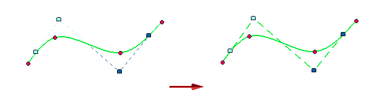
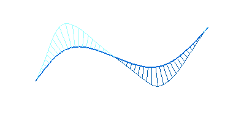
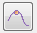
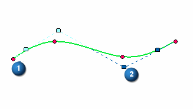
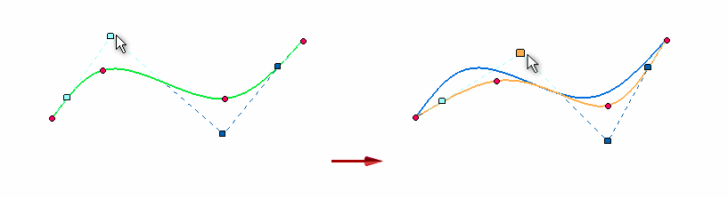
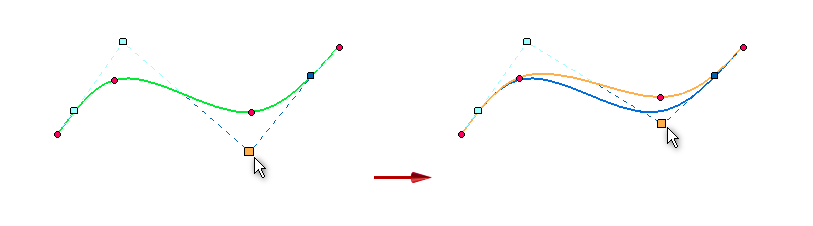
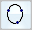
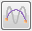

Curve command bar
Many of these options are available only when you select an existing curve.
The Curve command bar controls how the shape of the curve changes when you make changes to the edit points and control vertex points. These options are only available in Edit Profile Mode
- Style
-
Sets the active style.
- Line Color
-
Sets the drawing color. You can click the More option to define custom colors with the Color dialog box.
- Line Type
-
Sets the drawing line type and style.
- Line Width
-
Sets the line width.
- Add/Remove Points
-
Adds and removes points on the curve.
To learn how, see Insert or remove points on a curve.
- Show Polygon
-
Controls the display of the control polygon for the curve.

- Show Curvature Comb
-
Controls the display of the curvature comb for the curve. This helps you determine how quickly or gradually curves change and where they change direction.
The Show Curvature Comb option is only available if the Curvature Comb command check box is selected in the sketch or profile environment.

- Show Edit Points

-
Shows or hides the edit points (1) on the curve. (Refer to the illustration below.)
- Show Control Vertex Points
-
Shows or hides the control vertex points (2) on the curve.

- Shape Edit
-
Affects the shape of the entire curve when you move a point on the curve. This button is available only when you have selected a curve to edit.

- Local Edit
-
Affects the shape of the curve around the edit point. This button is available only when you have selected a curve to edit.

- Close Curve
-
Specifies that a curve is open or closed. You can use this option when creating a new curve by clicking or dragging. You also can use this option when modifying an existing curve that was created from three or more edit points. You cannot use this option to modify a freehand curve.
Closed option
Result
Off=


On=

- Simplify Curve

-
Reduces the edit points on a curve.
- Curve Options
-
Displays the Curve Options dialog box.
How do I
Draw a curveDisplay the control polygon for a curve
Insert or remove points on a curve
Simplify a curve
Convert analytic geometry to a b-spline curve
Draw a conic curve
Edit a conic curve
Look up more details
Curve commandCurve Options dialog box
Conic command
Conic command bar
Simplify Curve command
Simplify Curve dialog box
Convert To Curve command